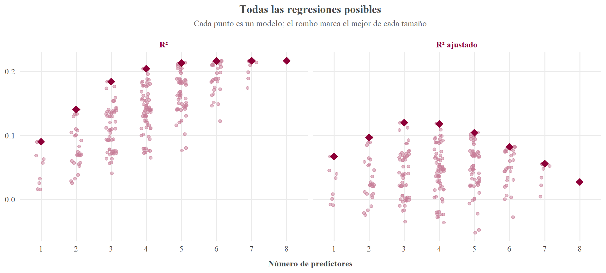
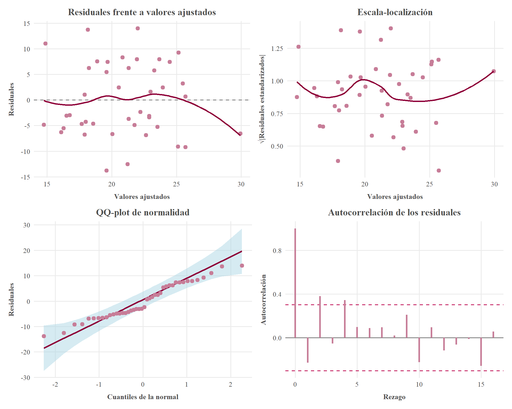
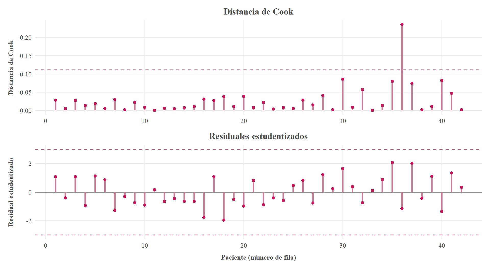

Capítulo 3 Regresión lineal múltiple
Este capítulo cubre el objetivo específico 8. Hasta ahora miramos cada característica por separado: una prueba por grupo, una correlación por variable. Aquí las metemos juntas en un modelo de regresión lineal múltiple para ver cuánto de la severidad motora explican entre todas, si se cumplen los supuestos del modelo, cuál es la mejor combinación de variables y qué pasa cuando se agregan el sexo y el grupo de edad como variables categóricas.
Seguimos trabajando con la tabla pacientes del capítulo 2 (un registro por paciente, n = 42), por la misma razón: los 5.863 registros no son independientes, y la regresión supone errores independientes. En todas las pruebas usamos \(\alpha = 0.05\).
Para presentar los modelos usamos dos funciones: una con los coeficientes estimados y sus pruebas t, y otra con las medidas de ajuste (R², R² ajustado y la prueba F global).
coeficientes_modelo <- function(modelo) {
summary(modelo)$coefficients %>%
as.data.frame() %>%
rownames_to_column("termino") %>%
mutate(`Pr(>|t|)` = formato_p(`Pr(>|t|)`, 4),
across(where(is.numeric), ~ round(.x, 4)))
}
ajuste_modelo <- function(modelo) {
resumen <- summary(modelo)
f <- resumen$fstatistic
tibble(
predictores = length(coef(modelo)) - 1,
R2 = resumen$r.squared,
R2_ajustado = resumen$adj.r.squared,
error_estandar = resumen$sigma,
F = f[["value"]],
gl_num = f[["numdf"]],
gl_den = f[["dendf"]],
p_valor = pf(f[["value"]], f[["numdf"]], f[["dendf"]], lower.tail = FALSE),
AIC = AIC(modelo)
) %>%
mutate(p_valor = formato_p(p_valor, 4),
across(where(is.numeric), ~ round(.x, 4)))
}
columnas_coeficientes <- c("Término", "Estimación", "Error estándar", "t", "p-valor")
columnas_ajuste <- c("Predictores", "R²", "R² ajustado", "Error estándar residual",
"F", "gl numerador", "gl denominador", "p-valor", "AIC")3.1 Modelo completo
Empezamos con las ocho características numéricas que quedaron tras la ingeniería de características, promediadas por paciente: la edad, los índices de jitter y shimmer, NHR, HNR, RPDE, DFA y PPE.
\[\text{motor} = \beta_0 + \beta_1\,\text{age} + \beta_2\,\text{jitter} + \beta_3\,\text{shimmer} + \beta_4\,\text{NHR} + \beta_5\,\text{HNR} + \beta_6\,\text{RPDE} + \beta_7\,\text{DFA} + \beta_8\,\text{PPE} + \varepsilon\]
modelo_completo <- lm(motor ~ age + jitter + shimmer + NHR + HNR + RPDE + DFA + PPE,
data = pacientes)
coeficientes_modelo(modelo_completo) %>%
tabla("Coeficientes del modelo completo.", etiqueta = "reg-completo-coef",
col.names = columnas_coeficientes)| Término | Estimación | Error estándar | t | p-valor |
|---|---|---|---|---|
| (Intercept) | 39.4621 | 54.8916 | 0.7189 | 0.4773 |
| age | 0.1597 | 0.1469 | 1.0869 | 0.2849 |
| jitter | -1.7035 | 10.4252 | -0.1634 | 0.8712 |
| shimmer | -1.9965 | 5.7326 | -0.3483 | 0.7298 |
| NHR | -13.6246 | 125.8937 | -0.1082 | 0.9145 |
| HNR | -0.6164 | 1.1425 | -0.5395 | 0.5932 |
| RPDE | 1.4885 | 29.7315 | 0.0501 | 0.9604 |
| DFA | -41.5354 | 30.9761 | -1.3409 | 0.1891 |
| PPE | 51.9001 | 59.3314 | 0.8747 | 0.388 |
ajuste_modelo(modelo_completo) %>%
tabla("Medidas de ajuste del modelo completo.", etiqueta = "reg-completo-ajuste",
col.names = columnas_ajuste)| Predictores | R² | R² ajustado | Error estándar residual | F | gl numerador | gl denominador | p-valor | AIC |
|---|---|---|---|---|---|---|---|---|
| 8 | 0.2167 | 0.0268 | 7.7733 | 1.1414 | 8 | 33 | 0.3628 | 301.32 |
3.1.1 Prueba de significancia global
\[H_0: \beta_1 = \beta_2 = \cdots = \beta_8 = 0 \qquad H_1: \text{al menos un } \beta_j \neq 0\]
La Tabla 3.2 da F(8, 33) = 1.14, p-valor = 0.363. No se rechaza \(H_0\): con las ocho características juntas, el modelo no explica la severidad motora mejor que su promedio. En la Tabla 3.1 tampoco hay ningún coeficiente significativo por sí solo; el p-valor más bajo es el de DFA (0.189).
3.1.2 R² y R² ajustado
El R² es 0.217: las ocho variables juntas explican el 21.7 % de la variabilidad de la severidad motora entre pacientes. Pero el R² siempre sube al agregar variables, aunque no aporten nada, y por eso se corrige con el R² ajustado, que penaliza el número de predictores frente al tamaño de la muestra. Aquí cae a 0.027: con ocho predictores para 42 pacientes, la penalización se come casi todo lo que gana el R². Es la primera señal de que al modelo le sobran variables.
3.1.3 Multicolinealidad
vif(modelo_completo) %>%
enframe("variable", "VIF") %>%
mutate(VIF = round(VIF, 2)) %>%
arrange(desc(VIF)) %>%
tabla("Factor de inflación de la varianza (VIF) de cada variable en el modelo completo.",
col.names = c("Variable", "VIF"))| Variable | VIF |
|---|---|
| jitter | 25.94 |
| NHR | 23.79 |
| shimmer | 12.98 |
| HNR | 10.68 |
| PPE | 10.45 |
| RPDE | 3.23 |
| DFA | 2.59 |
| age | 1.25 |
tibble(medida = "Índice de condición", valor = round(kappa(modelo_completo), 2)) %>%
tabla("Índice de condición del modelo completo.", etiqueta = "reg-completo-kappa",
col.names = c("Medida", "Valor"))| Medida | Valor |
|---|---|
| Índice de condición | 5745.67 |
Cinco variables superan el umbral de 5 en la Tabla 3.3: el índice de jitter (25.94), NHR (23.79), el índice de shimmer (12.98), HNR (10.68) y PPE (10.45). El índice de condición (5745.67, Tabla 3.4) también está muy por encima de 30. Hay multicolinealidad fuerte, algo esperable porque en el capítulo 1 ya vimos que las medidas de inestabilidad y de ruido de la voz se mueven juntas. Esto infla los errores estándar de los coeficientes, explica en parte que ninguno salga significativo y es otra razón para quedarnos con menos variables.
3.2 Selección del mejor modelo
3.2.1 Todas las regresiones posibles
Con ocho predictores hay \(2^8 - 1 = 255\) modelos posibles. Los ajustamos todos y comparamos tres criterios: el R² ajustado (mientras más alto, mejor), el AIC y el \(C_p\) de Mallows (mientras más bajos, mejor).
todas <- ols_step_all_possible(modelo_completo)
# según la versión de olsrr, la tabla viene directa o dentro de $result
todas <- if (is.data.frame(todas)) todas else todas$result
todas %>%
arrange(desc(adjr)) %>%
head(5) %>%
select(n, predictors, rsquare, adjr, cp, aic) %>%
mutate(across(c(rsquare, adjr, cp, aic), ~ round(.x, 4))) %>%
tabla("Los cinco modelos con mayor R² ajustado entre todas las regresiones posibles.",
etiqueta = "reg-todas-adjr",
col.names = c("Predictores", "Variables", "R²", "R² ajustado", "Cp", "AIC"))| Predictores | Variables | R² | R² ajustado | Cp | AIC |
|---|---|---|---|---|---|
| 3 | age DFA PPE | 0.1840 | 0.1196 | 0.3785 | 293.0388 |
| 4 | age jitter DFA PPE | 0.2040 | 0.1180 | 1.5356 | 293.9961 |
| 4 | age NHR DFA PPE | 0.2028 | 0.1166 | 1.5867 | 294.0601 |
| 3 | jitter DFA PPE | 0.1766 | 0.1116 | 0.6892 | 293.4167 |
| 4 | age shimmer DFA PPE | 0.1958 | 0.1089 | 1.8802 | 294.4256 |
todas %>%
arrange(aic) %>%
head(5) %>%
select(n, predictors, rsquare, adjr, cp, aic) %>%
mutate(across(c(rsquare, adjr, cp, aic), ~ round(.x, 4))) %>%
tabla("Los cinco modelos con menor AIC entre todas las regresiones posibles.",
etiqueta = "reg-todas-aic",
col.names = c("Predictores", "Variables", "R²", "R² ajustado", "Cp", "AIC"))| Predictores | Variables | R² | R² ajustado | Cp | AIC |
|---|---|---|---|---|---|
| 3 | age DFA PPE | 0.1840 | 0.1196 | 0.3785 | 293.0388 |
| 2 | DFA PPE | 0.1406 | 0.0965 | 0.2080 | 293.2165 |
| 3 | jitter DFA PPE | 0.1766 | 0.1116 | 0.6892 | 293.4167 |
| 2 | age PPE | 0.1335 | 0.0890 | 0.5086 | 293.5637 |
| 3 | NHR DFA PPE | 0.1736 | 0.1084 | 0.8151 | 293.5687 |
todas %>%
arrange(cp) %>%
head(5) %>%
select(n, predictors, rsquare, adjr, cp, aic) %>%
mutate(across(c(rsquare, adjr, cp, aic), ~ round(.x, 4))) %>%
tabla("Los cinco modelos con menor Cp de Mallows entre todas las regresiones posibles.",
etiqueta = "reg-todas-cp",
col.names = c("Predictores", "Variables", "R²", "R² ajustado", "Cp", "AIC"))| Predictores | Variables | R² | R² ajustado | Cp | AIC |
|---|---|---|---|---|---|
| 2 | DFA PPE | 0.1406 | 0.0965 | 0.2080 | 293.2165 |
| 1 | age | 0.0895 | 0.0668 | 0.3593 | 293.6406 |
| 3 | age DFA PPE | 0.1840 | 0.1196 | 0.3785 | 293.0388 |
| 2 | age PPE | 0.1335 | 0.0890 | 0.5086 | 293.5637 |
| 2 | age HNR | 0.1328 | 0.0884 | 0.5349 | 293.5939 |
set.seed(2026)
todas %>%
select(n, rsquare, adjr) %>%
pivot_longer(-n, names_to = "medida", values_to = "valor") %>%
mutate(medida = factor(medida, levels = c("rsquare", "adjr"),
labels = c("R²", "R² ajustado"))) %>%
ggplot(aes(x = factor(n), y = valor)) +
geom_jitter(width = 0.15, alpha = 0.5, color = paleta[["rosa_medio"]]) +
stat_summary(fun = max, geom = "point", shape = 18, size = 4, color = paleta[["vino"]]) +
facet_wrap(~ medida) +
labs(title = "Todas las regresiones posibles",
subtitle = "Cada punto es un modelo; el rombo marca el mejor de cada tamaño",
x = "Número de predictores",
y = NULL)
Figura 3.1: R² y R² ajustado de las 255 regresiones posibles según el número de predictores.
Se ajustaron los 255 modelos posibles. Los criterios apuntan al mismo modelo. El que tiene la edad, DFA y PPE es el de mayor R² ajustado (0.1196, Tabla 3.5) y el de menor AIC (293.04, Tabla 3.6). Con el \(C_p\) de Mallows (Tabla 3.7) queda tercero (0.38), detrás de DFA + PPE (0.21) y de la edad sola (0.36). Pero los tres tienen un \(C_p\) muy por debajo de su número de parámetros, así que ninguno tiene un sesgo importante y las diferencias entre ellos son mínimas.
En la Figura 3.1 se observa por qué el R² no sirve para elegir: el mejor R² de cada tamaño siempre sube, de 0.09 con una variable a 0.22 con las ocho. El R² ajustado, en cambio, sube hasta los tres predictores (0.12) y después baja, porque a partir de ahí cada variable nueva aporta menos de lo que cuesta.
3.2.2 Selección secuencial
Como segundo criterio usamos la selección secuencial con stepAIC, que agrega o quita variables mientras el AIC baje: hacia adelante (desde el modelo sin predictores), hacia atrás (desde el modelo completo) y en ambas direcciones.
modelo_nulo <- lm(motor ~ 1, data = pacientes)
sel_forward <- MASS::stepAIC(modelo_nulo,
scope = list(lower = modelo_nulo, upper = modelo_completo),
direction = "forward", trace = FALSE)
sel_backward <- MASS::stepAIC(modelo_completo, direction = "backward", trace = FALSE)
sel_both <- MASS::stepAIC(modelo_nulo,
scope = list(lower = modelo_nulo, upper = modelo_completo),
direction = "both", trace = FALSE)
tibble(
procedimiento = c("Hacia adelante", "Hacia atrás", "Ambas direcciones"),
modelo = sapply(list(sel_forward, sel_backward, sel_both),
function(m) paste(attr(terms(m), "term.labels"), collapse = " + ")),
AIC = sapply(list(sel_forward, sel_backward, sel_both), AIC)
) %>%
mutate(AIC = round(AIC, 4)) %>%
tabla("Modelo elegido por cada procedimiento de selección secuencial.",
col.names = c("Procedimiento", "Variables", "AIC"))| Procedimiento | Variables | AIC |
|---|---|---|
| Hacia adelante | age + PPE + DFA | 293.0388 |
| Hacia atrás | age + DFA + PPE | 293.0388 |
| Ambas direcciones | age + PPE + DFA | 293.0388 |
Los tres procedimientos llegan al mismo modelo, edad + DFA + PPE, con AIC = 293.04 (Tabla 3.8); el orden de las variables solo cambia por el orden en que se fueron agregando. Coincide con lo que dieron todas las regresiones posibles, así que ese es el modelo seleccionado.
3.2.3 Comparación con el modelo completo
Para confirmar que las cinco variables que salen no hacen falta, comparamos el modelo seleccionado con el completo mediante la prueba F parcial:
\[H_0: \beta_{\text{jitter}} = \beta_{\text{shimmer}} = \beta_{\text{NHR}} = \beta_{\text{HNR}} = \beta_{\text{RPDE}} = 0 \qquad H_1: \text{al menos uno es distinto de 0}\]
modelo_seleccionado <- lm(motor ~ age + DFA + PPE, data = pacientes)
anova(modelo_seleccionado, modelo_completo) %>%
as.data.frame() %>%
mutate(modelo = c("Seleccionado", "Completo"), .before = 1) %>%
mutate(`Pr(>F)` = if_else(is.na(`Pr(>F)`), NA_character_, formato_p(`Pr(>F)`, 4)),
across(where(is.numeric), ~ round(.x, 4))) %>%
tabla("Prueba F parcial: modelo seleccionado frente al modelo completo.",
col.names = c("Modelo", "gl residuales", "SC residual", "gl", "SC", "F", "p-valor"))| Modelo | gl residuales | SC residual | gl | SC | F | p-valor |
|---|---|---|---|---|---|---|
| Seleccionado | 38 | 2077.272 | ||||
| Completo | 33 | 1993.978 | 5 | 83.2941 | 0.2757 | 0.9231 |
La prueba da F(5, 33) = 0.28, p-valor = 0.923 (Tabla 3.9), así que no se rechaza \(H_0\). Quitar el jitter, el shimmer, NHR, HNR y RPDE solo aumenta la suma de cuadrados residual en 83.29, y esa diferencia no es significativa: esas cinco variables no aportan nada que no esté ya en las otras tres.
3.3 Modelo seleccionado
\[\text{motor} = \beta_0 + \beta_1\,\text{age} + \beta_2\,\text{DFA} + \beta_3\,\text{PPE} + \varepsilon\]
coeficientes_modelo(modelo_seleccionado) %>%
tabla("Coeficientes del modelo seleccionado.", etiqueta = "reg-seleccionado-coef",
col.names = columnas_coeficientes)| Término | Estimación | Error estándar | t | p-valor |
|---|---|---|---|---|
| (Intercept) | 21.2554 | 15.6238 | 1.3604 | 0.1817 |
| age | 0.1841 | 0.1295 | 1.4221 | 0.1632 |
| DFA | -32.0695 | 20.8998 | -1.5344 | 0.1332 |
| PPE | 40.1518 | 20.1935 | 1.9884 | 0.054 |
confint(modelo_seleccionado) %>%
as.data.frame() %>%
rownames_to_column("termino") %>%
mutate(across(where(is.numeric), ~ round(.x, 4))) %>%
tabla("Intervalos de confianza del 95 % para los coeficientes del modelo seleccionado.",
etiqueta = "reg-seleccionado-ic",
col.names = c("Término", "Límite inferior", "Límite superior"))| Término | Límite inferior | Límite superior |
|---|---|---|
| (Intercept) | -10.3734 | 52.8842 |
| age | -0.0780 | 0.4462 |
| DFA | -74.3790 | 10.2400 |
| PPE | -0.7278 | 81.0314 |
ajuste_modelo(modelo_seleccionado) %>%
tabla("Medidas de ajuste del modelo seleccionado.", etiqueta = "reg-seleccionado-ajuste",
col.names = columnas_ajuste)| Predictores | R² | R² ajustado | Error estándar residual | F | gl numerador | gl denominador | p-valor | AIC |
|---|---|---|---|---|---|---|---|---|
| 3 | 0.184 | 0.1196 | 7.3936 | 2.8564 | 3 | 38 | 0.0497 | 293.0388 |
vif(modelo_seleccionado) %>%
enframe("variable", "VIF") %>%
mutate(VIF = round(VIF, 2)) %>%
tabla("Factor de inflación de la varianza (VIF) de cada variable en el modelo seleccionado.",
etiqueta = "reg-seleccionado-vif", col.names = c("Variable", "VIF"))| Variable | VIF |
|---|---|
| age | 1.07 |
| DFA | 1.30 |
| PPE | 1.34 |
El modelo estimado es
\[\widehat{\text{motor}} = 21.26 + 0.18\,\text{age} - 32.07\,\text{DFA} + 40.15\,\text{PPE}\]
Según la Tabla 3.12, la prueba F global da F(3, 38) = 2.86, p-valor = 0.0497. Queda justo por debajo de 0.05, así que se rechaza \(H_0\): al menos una de las tres variables se relaciona con la severidad motora.
El R² es 0.184 y el R² ajustado 0.12. El modelo explica el 18.4 % de la variabilidad entre pacientes, y al corregir por el número de variables queda en 12 %, mucho más que el 2.7 % del modelo completo con menos de la mitad de las variables. Aun así, es un ajuste bajo: el error estándar residual (7.39 puntos) es casi tan grande como la desviación estándar de la severidad por paciente (7.88, Tabla 2.2). La mayor parte de las diferencias entre pacientes no la explican la edad ni la voz.
Los coeficientes de la Tabla 3.10 se leen manteniendo fijas las otras dos variables:
- Edad: cada año más de edad suma 0.18 puntos a la severidad esperada, manteniendo constantes DFA y PPE (t(38) = 1.42, p-valor = 0.163).
- DFA: el coeficiente es -32.07 (t(38) = -1.53, p-valor = 0.133). Como DFA se mueve en décimas, es más fácil leerlo así: un aumento de 0.1 en DFA se asocia con 3.2 puntos menos de severidad.
- PPE: el coeficiente es 40.15 (t(38) = 1.99, p-valor = 0.054); un aumento de 0.1 en PPE se asocia con 4 puntos más de severidad.
- Intercepto (21.26): no tiene una lectura práctica, porque correspondería a un paciente de 0 años con DFA y PPE iguales a 0.
Ninguno es significativo por separado con \(\alpha = 0.05\) (PPE queda en el límite), y los intervalos de confianza del 95 % de la Tabla 3.11 incluyen al 0 en los tres casos. Eso no contradice la prueba global: las tres variables juntas sí explican algo, pero con 42 pacientes no alcanza para separar el aporte de cada una. Los signos coinciden con las correlaciones del capítulo 2: a más edad y más PPE, más severidad; a más DFA, menos. Como en las correlaciones, estos coeficientes describen asociaciones y no relaciones de causa y efecto: el modelo dice cuánto cambia en promedio la severidad esperada entre pacientes que difieren en edad, DFA o PPE, no que cambiar esas variables cambie la severidad de un paciente.
En este modelo ya no hay multicolinealidad: los VIF van de 1.07 a 1.34 (Tabla 3.13).
3.4 Análisis de los errores
El modelo supone que los errores son independientes, tienen media cero, siguen una distribución normal y tienen varianza constante. Lo revisamos con los residuales del modelo seleccionado, primero de forma gráfica y luego con pruebas formales.
residuales <- residuals(modelo_seleccionado)
diagnostico <- tibble(
ajustados = fitted(modelo_seleccionado),
residuales = residuales,
raiz_estandarizados = sqrt(abs(rstandard(modelo_seleccionado)))
)
p_ajustados <- ggplot(diagnostico, aes(x = ajustados, y = residuales)) +
geom_hline(yintercept = 0, linetype = "dashed", color = "gray50") +
geom_point(color = paleta[["rosa_medio"]], size = 2.2) +
geom_smooth(method = "loess", formula = y ~ x, se = FALSE,
color = paleta[["vino"]], linewidth = 0.9) +
labs(title = "Residuales frente a valores ajustados",
x = "Valores ajustados", y = "Residuales")
p_escala <- ggplot(diagnostico, aes(x = ajustados, y = raiz_estandarizados)) +
geom_point(color = paleta[["rosa_medio"]], size = 2.2) +
geom_smooth(method = "loess", formula = y ~ x, se = FALSE,
color = paleta[["vino"]], linewidth = 0.9) +
labs(title = "Escala-localización",
x = "Valores ajustados", y = "√|Residuales estandarizados|")
# QQ-plot con la misma banda de confianza punto a punto que usa car::qqPlot
n_res <- length(residuales)
probabilidades <- ppoints(n_res)
cuantiles_normal <- qnorm(probabilidades)
cuartiles_res <- quantile(residuales, c(0.25, 0.75))
pendiente <- diff(cuartiles_res) / diff(qnorm(c(0.25, 0.75)))
intercepto <- cuartiles_res[[1]] - pendiente * qnorm(0.25)
error_qq <- (pendiente / dnorm(cuantiles_normal)) *
sqrt(probabilidades * (1 - probabilidades) / n_res)
datos_qq <- tibble(
teorico = cuantiles_normal,
observado = sort(residuales),
recta = intercepto + pendiente * cuantiles_normal,
inferior = recta - qnorm(0.975) * error_qq,
superior = recta + qnorm(0.975) * error_qq
)
p_qq <- ggplot(datos_qq, aes(x = teorico)) +
geom_ribbon(aes(ymin = inferior, ymax = superior), fill = paleta[["azul_claro"]], alpha = 0.5) +
geom_line(aes(y = recta), color = paleta[["vino"]], linewidth = 0.9) +
geom_point(aes(y = observado), color = paleta[["rosa_medio"]], size = 2.2) +
labs(title = "QQ-plot de normalidad",
x = "Cuantiles de la normal", y = "Residuales")
autocorrelacion <- acf(residuales, plot = FALSE)
datos_acf <- tibble(rezago = as.vector(autocorrelacion$lag),
valor = as.vector(autocorrelacion$acf))
banda_acf <- qnorm(0.975) / sqrt(n_res)
p_acf <- ggplot(datos_acf, aes(x = rezago, y = valor)) +
geom_hline(yintercept = 0, color = "gray50") +
geom_hline(yintercept = c(-banda_acf, banda_acf), linetype = "dashed",
color = paleta[["fucsia"]]) +
geom_segment(aes(xend = rezago, yend = 0), color = paleta[["rosa_medio"]], linewidth = 1.2) +
labs(title = "Autocorrelación de los residuales",
x = "Rezago", y = "Autocorrelación")
(p_ajustados + p_escala) / (p_qq + p_acf)
Figura 3.2: Análisis gráfico de los residuales del modelo seleccionado: residuales frente a valores ajustados, escala-localización, QQ-plot de normalidad con banda de confianza del 95 % y autocorrelación.
En la Figura 3.2 se observa lo siguiente:
- Residuales frente a valores ajustados (arriba a la izquierda): los puntos se reparten alrededor de 0 sin un patrón claro. La línea de tendencia se curva un poco en los extremos, pero ahí hay muy pocos pacientes.
- Escala-localización (arriba a la derecha): la dispersión de los residuales es parecida a lo largo de los valores ajustados, sin forma de embudo, lo que apunta a varianza constante.
- QQ-plot (abajo a la izquierda): los residuales siguen la recta y casi todos quedan dentro de la banda de confianza.
- Autocorrelación (abajo a la derecha): las barras de los rezagos 2 y 4 apenas cruzan las líneas punteadas de la banda. El orden de los pacientes es solo su número de identificación, así que no hay una secuencia en el tiempo que pueda producir dependencia, y la prueba de Durbin-Watson lo confirma.
3.4.1 Independencia
\[H_0: \text{los errores son independientes} \qquad H_1: \text{los errores están autocorrelacionados}\]
set.seed(2026)
prueba_dw <- durbinWatsonTest(modelo_seleccionado)
tibble(prueba = "Durbin-Watson",
autocorrelacion = round(prueba_dw$r, 3),
estadistico = round(prueba_dw$dw, 3),
p_valor = formato_p(prueba_dw$p)) %>%
tabla("Prueba de Durbin-Watson para la independencia de los errores del modelo seleccionado.",
col.names = c("Prueba", "Autocorrelación de rezago 1", "D-W", "p-valor"))| Prueba | Autocorrelación de rezago 1 | D-W | p-valor |
|---|---|---|---|
| Durbin-Watson | -0.229 | 2.429 | 0.142 |
D-W = 2.43, p-valor = 0.142 (Tabla 3.14): no se rechaza \(H_0\), los errores son independientes. El p-valor de durbinWatsonTest se calcula por simulación, por eso fijamos una semilla para que el resultado no cambie cada vez que se compila el libro.
3.4.2 Normalidad
\[H_0: \text{los errores siguen una distribución normal} \qquad H_1: \text{no la siguen}\]
list("Shapiro-Wilk" = shapiro.test(residuales)) %>%
tabla_pruebas("Prueba de Shapiro-Wilk sobre los residuales del modelo seleccionado.")| Prueba | Estadístico | Grados de libertad | p-valor | Estimación | IC 95 % |
|---|---|---|---|---|---|
| Shapiro-Wilk | W = 0.955 | 0.095 |
W = 0.955, p-valor = 0.095 (Tabla 3.15): no se rechaza la normalidad de los errores, aunque el p-valor no está muy lejos de 0.05. Coincide con lo que se veía en el QQ-plot.
3.4.3 Media cero
\[H_0: \mu_{\varepsilon} = 0 \qquad H_1: \mu_{\varepsilon} \neq 0\]
prueba_media_cero <- t.test(residuales, mu = 0)
tibble(prueba = "t para una muestra",
estadistico = format(signif(prueba_media_cero$statistic, 3), scientific = TRUE),
gl = prueba_media_cero$parameter,
p_valor = formato_p(prueba_media_cero$p.value),
media = format(signif(mean(residuales), 3), scientific = TRUE),
desviacion = round(sd(residuales), 3)) %>%
tabla("Prueba t de media cero sobre los residuales del modelo seleccionado.",
col.names = c("Prueba", "t", "Grados de libertad", "p-valor", "Media de los residuales",
"Desviación estándar de los residuales"))| Prueba | t | Grados de libertad | p-valor | Media de los residuales | Desviación estándar de los residuales |
|---|---|---|---|---|---|
| t para una muestra | 2.79e-16 | 41 | 1 | 3.07e-16 | 7.118 |
t(41) ≈ 0, p-valor = 1 (Tabla 3.16): la media de los residuales es prácticamente 0 (del orden de 10⁻¹⁶; desviación estándar de 7.12), como corresponde a un modelo con intercepto.
3.4.4 Homocedasticidad
\[H_0: \text{la varianza de los errores es constante} \qquad H_1: \text{no es constante}\]
list("Breusch-Pagan" = bptest(modelo_seleccionado)) %>%
tabla_pruebas("Prueba de Breusch-Pagan para la homocedasticidad de los errores del modelo seleccionado.")| Prueba | Estadístico | Grados de libertad | p-valor | Estimación | IC 95 % |
|---|---|---|---|---|---|
| Breusch-Pagan | BP = 0.412 | 3 | 0.938 |
BP(3) = 0.41, p-valor = 0.938 (Tabla 3.17): no se rechaza la homocedasticidad. La varianza de los errores es constante, igual que se veía en el gráfico de escala-localización.
3.4.5 Valores atípicos e influyentes
Un paciente es atípico si su residual estudentizado queda fuera de (-3, 3), y es influyente si su distancia de Cook supera \(4/(n - p - 2)\), con \(p\) el número de coeficientes del modelo.
residuales_estudentizados <- rstudent(modelo_seleccionado)
prueba_bonferroni <- outlierTest(modelo_seleccionado, n.max = 5)
distancia_cook <- cooks.distance(modelo_seleccionado)
n <- nrow(pacientes)
p <- length(coef(modelo_seleccionado))
umbral_cook <- 4 / (n - p - 2)
tibble(
medida = c("Residual estudentizado mínimo", "Residual estudentizado máximo",
"Pacientes con residual estudentizado fuera de (-3, 3)",
"Paciente con el mayor residual estudentizado (Bonferroni)",
"p-valor sin ajustar de ese paciente", "p-valor ajustado por Bonferroni",
"Umbral de la distancia de Cook", "Pacientes por encima del umbral de Cook"),
valor = c(round(min(residuales_estudentizados), 3),
round(max(residuales_estudentizados), 3),
sum(abs(residuales_estudentizados) > 3),
names(prueba_bonferroni$rstudent)[1],
formato_p(prueba_bonferroni$p[1]),
formato_p(min(1, n * prueba_bonferroni$p[1])),
round(umbral_cook, 3),
paste(which(distancia_cook > umbral_cook), collapse = ", "))
) %>%
tabla("Valores atípicos e influyentes en el modelo seleccionado.", etiqueta = "reg-atipicos-resumen",
col.names = c("Medida", "Valor"))| Medida | Valor |
|---|---|
| Residual estudentizado mínimo | -1.972 |
| Residual estudentizado máximo | 2.05 |
| Pacientes con residual estudentizado fuera de (-3, 3) | 0 |
| Paciente con el mayor residual estudentizado (Bonferroni) | 35 |
| p-valor sin ajustar de ese paciente | 0.048 |
| p-valor ajustado por Bonferroni | 1 |
| Umbral de la distancia de Cook | 0.111 |
| Pacientes por encima del umbral de Cook | 36 |
pacientes %>%
mutate(cook = distancia_cook) %>%
slice(which(distancia_cook > umbral_cook)) %>%
select(subject., sex, age, motor, DFA, PPE, cook) %>%
mutate(across(where(is.numeric), ~ round(.x, 3))) %>%
tabla("Paciente con distancia de Cook por encima del umbral.",
col.names = c("Paciente", "Sexo", "Edad", "Motor UPDRS promedio", "DFA", "PPE",
"Distancia de Cook"))| Paciente | Sexo | Edad | Motor UPDRS promedio | DFA | PPE | Distancia de Cook |
|---|---|---|---|---|---|---|
| 36 | Femenino | 62 | 23.395 | 0.602 | 0.412 | 0.235 |
influencia <- tibble(paciente = seq_along(distancia_cook),
cook = distancia_cook,
estudentizado = residuales_estudentizados)
p_cook <- ggplot(influencia, aes(x = paciente, y = cook)) +
geom_segment(aes(xend = paciente, yend = 0), color = paleta[["rosa_medio"]], linewidth = 1.1) +
geom_point(color = paleta[["fucsia"]], size = 1.8) +
geom_hline(yintercept = umbral_cook, linetype = "dashed", color = paleta[["vino"]]) +
labs(title = "Distancia de Cook", x = NULL, y = "Distancia de Cook")
p_estudentizado <- ggplot(influencia, aes(x = paciente, y = estudentizado)) +
geom_hline(yintercept = 0, color = "gray50") +
geom_hline(yintercept = c(-3, 3), linetype = "dashed", color = paleta[["vino"]]) +
geom_segment(aes(xend = paciente, yend = 0), color = paleta[["rosa_medio"]], linewidth = 1.1) +
geom_point(color = paleta[["fucsia"]], size = 1.8) +
labs(title = "Residuales estudentizados", x = "Paciente (número de fila)",
y = "Residual estudentizado")
p_cook / p_estudentizado
Figura 3.3: Distancia de Cook y residuales estudentizados de cada paciente en el modelo seleccionado. Las líneas punteadas marcan el umbral de Cook y los límites de ±3.
Ningún paciente es atípico (Tabla 3.18): los residuales estudentizados van de -1.97 a 2.05, lejos de ±3. La prueba de Bonferroni tampoco encuentra ninguno; el mayor, el del paciente 35, tiene un p-valor sin ajustar de 0.048, que deja de ser significativo al corregir por las 42 pruebas.
Con la distancia de Cook el umbral es 0.111, y solo lo supera el paciente 36 (0.235). En la Figura 3.3 se observa que su barra se separa claramente del resto, aunque su residual estudentizado es moderado. Es decir, el modelo no lo predice mal, pero su combinación de valores pesa mucho en la estimación de los coeficientes; en la Tabla 3.19 se ve que tiene un PPE de 0.412. No hay razón para sacarlo: es un paciente real del estudio, y el modelo cumple los supuestos con él incluido.
En resumen, el modelo seleccionado cumple los cuatro supuestos sobre los errores (independencia, normalidad, media cero y varianza constante) y no tiene atípicos.
3.5 Modelo con variables categóricas
3.5.1 Codificación con variables indicadoras
El sexo y el grupo de edad entran al modelo como variables indicadoras (dummy), que valen 1 si el paciente pertenece a la categoría y 0 si no. Cada variable categórica con \(k\) categorías genera \(k - 1\) indicadoras; la que queda por fuera es la categoría de referencia, y cada coeficiente se interpreta como la diferencia en la severidad motora promedio frente a ella. Aquí las referencias son los hombres y los menores de 60 años.
model.matrix(~ sex + grupo_edad, data = pacientes) %>%
as.data.frame() %>%
select(-`(Intercept)`) %>%
bind_cols(pacientes %>% select(sex, grupo_edad), .) %>%
distinct() %>%
arrange(sex, grupo_edad) %>%
tabla("Codificación del sexo y del grupo de edad con variables indicadoras.",
col.names = c("Sexo", "Grupo de edad", "sexFemenino", "grupo_edad60 a 70",
"grupo_edadMayor de 70"))| Sexo | Grupo de edad | sexFemenino | grupo_edad60 a 70 | grupo_edadMayor de 70 |
|---|---|---|---|---|
| Masculino | Menor de 60 | 0 | 0 | 0 |
| Masculino | 60 a 70 | 0 | 1 | 0 |
| Masculino | Mayor de 70 | 0 | 0 | 1 |
| Femenino | Menor de 60 | 1 | 0 | 0 |
| Femenino | 60 a 70 | 1 | 1 | 0 |
| Femenino | Mayor de 70 | 1 | 0 | 1 |
La Tabla 3.20 muestra las seis combinaciones posibles. El sexo, con dos categorías, genera una sola indicadora, y el grupo de edad, con tres, genera dos. Un hombre menor de 60 años tiene las tres en 0, así que su severidad esperada es el intercepto; una mujer mayor de 70 tiene sexFemenino = 1 y grupo_edadMayor de 70 = 1.
3.5.2 Modelo solo con las variables categóricas
\[\text{motor} = \beta_0 + \beta_1\,\text{sexFemenino} + \beta_2\,\text{grupo\_edad60 a 70} + \beta_3\,\text{grupo\_edadMayor de 70} + \varepsilon\]
modelo_categorico <- lm(motor ~ sex + grupo_edad, data = pacientes)
coeficientes_modelo(modelo_categorico) %>%
tabla("Coeficientes del modelo con sexo y grupo de edad.", etiqueta = "reg-categorico-coef",
col.names = columnas_coeficientes)| Término | Estimación | Error estándar | t | p-valor |
|---|---|---|---|---|
| (Intercept) | 18.4604 | 2.3072 | 8.0011 | < 0.001 |
| sexFemenino | -0.5237 | 2.5236 | -0.2075 | 0.8367 |
| grupo_edad60 a 70 | 1.6388 | 2.8631 | 0.5724 | 0.5704 |
| grupo_edadMayor de 70 | 6.7237 | 2.9529 | 2.2770 | 0.0285 |
ajuste_modelo(modelo_categorico) %>%
tabla("Medidas de ajuste del modelo con sexo y grupo de edad.",
etiqueta = "reg-categorico-ajuste", col.names = columnas_ajuste)| Predictores | R² | R² ajustado | Error estándar residual | F | gl numerador | gl denominador | p-valor | AIC |
|---|---|---|---|---|---|---|---|---|
| 3 | 0.132 | 0.0635 | 7.6256 | 1.926 | 3 | 38 | 0.1418 | 295.6346 |
Los coeficientes de la Tabla 3.21 se leen así:
- Intercepto (18.46): es la severidad promedio estimada de un hombre menor de 60 años.
- Sexo femenino (-0.52, p-valor = 0.837): a igual grupo de edad, las mujeres tienen medio punto menos que los hombres, una diferencia que no es significativa. Es lo mismo que dio la prueba t por sexo del capítulo 2.
- Grupo de 60 a 70 años (1.64, p-valor = 0.57): a igual sexo, el grupo intermedio tiene 1.64 puntos más que los menores de 60, sin diferencia significativa.
- Grupo de mayores de 70 años (6.72, p-valor = 0.029): a igual sexo, los mayores de 70 tienen 6.72 puntos más que los menores de 60, y esta diferencia sí es significativa.
Es la misma diferencia de casi 7 puntos que encontramos con el ANOVA del capítulo 2. Allá la prueba de Tukey no la declaró significativa (p-valor ajustado = 0.062) porque corrige por las tres comparaciones entre grupos; la prueba t del coeficiente no hace esa corrección.
Según la Tabla 3.22, el modelo en conjunto no es significativo (F(3, 38) = 1.93, p-valor = 0.142), con un R² de 0.132 y un R² ajustado de 0.063.
3.5.3 Modelo seleccionado con las variables categóricas
Por último, agregamos el sexo y el grupo de edad a las dos variables acústicas del modelo seleccionado. El grupo de edad reemplaza a la edad numérica, porque las dos miden lo mismo.
modelo_mixto <- lm(motor ~ DFA + PPE + sex + grupo_edad, data = pacientes)
coeficientes_modelo(modelo_mixto) %>%
tabla("Coeficientes del modelo con DFA, PPE, sexo y grupo de edad.",
etiqueta = "reg-mixto-coef", col.names = columnas_coeficientes)| Término | Estimación | Error estándar | t | p-valor |
|---|---|---|---|---|
| (Intercept) | 32.9648 | 13.4785 | 2.4457 | 0.0195 |
| DFA | -34.0834 | 21.9814 | -1.5506 | 0.1298 |
| PPE | 42.9473 | 21.1756 | 2.0282 | 0.05 |
| sexFemenino | -0.8034 | 2.5112 | -0.3199 | 0.7509 |
| grupo_edad60 a 70 | -0.7606 | 2.9973 | -0.2538 | 0.8011 |
| grupo_edadMayor de 70 | 4.4994 | 3.0526 | 1.4740 | 0.1492 |
ajuste_modelo(modelo_mixto) %>%
tabla("Medidas de ajuste del modelo con DFA, PPE, sexo y grupo de edad.",
etiqueta = "reg-mixto-ajuste", col.names = columnas_ajuste)| Predictores | R² | R² ajustado | Error estándar residual | F | gl numerador | gl denominador | p-valor | AIC |
|---|---|---|---|---|---|---|---|---|
| 5 | 0.2283 | 0.1211 | 7.3874 | 2.1295 | 5 | 36 | 0.0841 | 294.6973 |
Para saber si el sexo y el grupo de edad aportan en conjunto, comparamos con la prueba F parcial el modelo mixto frente al que solo tiene DFA y PPE:
\[H_0: \beta_{\text{sexFemenino}} = \beta_{\text{60 a 70}} = \beta_{\text{Mayor de 70}} = 0 \qquad H_1: \text{al menos uno es distinto de 0}\]
modelo_acustico <- lm(motor ~ DFA + PPE, data = pacientes)
anova(modelo_acustico, modelo_mixto) %>%
as.data.frame() %>%
mutate(modelo = c("DFA + PPE", "DFA + PPE + sexo + grupo de edad"), .before = 1) %>%
mutate(`Pr(>F)` = if_else(is.na(`Pr(>F)`), NA_character_, formato_p(`Pr(>F)`, 4)),
across(where(is.numeric), ~ round(.x, 4))) %>%
tabla("Prueba F parcial: aporte conjunto del sexo y el grupo de edad.",
col.names = c("Modelo", "gl residuales", "SC residual", "gl", "SC", "F", "p-valor"))| Modelo | gl residuales | SC residual | gl | SC | F | p-valor |
|---|---|---|---|---|---|---|
| DFA + PPE | 39 | 2187.819 | ||||
| DFA + PPE + sexo + grupo de edad | 36 | 1964.634 | 3 | 223.185 | 1.3632 | 0.2695 |
En la Tabla 3.23, al controlar por DFA y PPE, la diferencia de los mayores de 70 frente a los menores de 60 baja a 4.5 puntos y deja de ser significativa (p-valor = 0.149). El sexo sigue sin aportar (p-valor = 0.751) y PPE queda justo en el límite (p-valor = 0.05). Según la Tabla 3.24, el R² sube a 0.228 y el R² ajustado a 0.121, casi igual al del modelo seleccionado, pero el modelo en conjunto no es significativo (F(5, 36) = 2.13, p-valor = 0.084).
La prueba F parcial da F(3, 36) = 1.36, p-valor = 0.27 (Tabla 3.25), así que no se rechaza \(H_0\): agregar el sexo y el grupo de edad a DFA y PPE no mejora el modelo de forma significativa.
3.6 Comparación de los modelos
list(
"Completo" = modelo_completo,
"Seleccionado (age + DFA + PPE)" = modelo_seleccionado,
"Solo categóricas (sexo + grupo de edad)" = modelo_categorico,
"Mixto (DFA + PPE + sexo + grupo de edad)" = modelo_mixto
) %>%
map_dfr(ajuste_modelo, .id = "modelo") %>%
select(modelo, predictores, R2, R2_ajustado, error_estandar, p_valor, AIC) %>%
tabla("Comparación de los modelos ajustados.",
col.names = c("Modelo", "Predictores", "R²", "R² ajustado", "Error estándar residual",
"p-valor (F global)", "AIC"))| Modelo | Predictores | R² | R² ajustado | Error estándar residual | p-valor (F global) | AIC |
|---|---|---|---|---|---|---|
| Completo | 8 | 0.2167 | 0.0268 | 7.7733 | 0.3628 | 301.3200 |
| Seleccionado (age + DFA + PPE) | 3 | 0.1840 | 0.1196 | 7.3936 | 0.0497 | 293.0388 |
| Solo categóricas (sexo + grupo de edad) | 3 | 0.1320 | 0.0635 | 7.6256 | 0.1418 | 295.6346 |
| Mixto (DFA + PPE + sexo + grupo de edad) | 5 | 0.2283 | 0.1211 | 7.3874 | 0.0841 | 294.6973 |
En la Tabla 3.26, el modelo seleccionado (edad + DFA + PPE) es el único con la prueba F global significativa (p-valor = 0.0497) y el de menor AIC (293.04). El modelo mixto tiene un R² ajustado apenas mayor (0.1211 frente a 0.1196), pero usa cinco predictores en vez de tres, tiene un AIC más alto (294.7) y su prueba global no es significativa. Con una diferencia tan pequeña preferimos el modelo más simple. El modelo completo es el peor en R² ajustado y en AIC, y el de solo categóricas queda en medio.
El mejor modelo es, entonces, el seleccionado. Explica el 18.4 % de la variabilidad de la severidad motora entre pacientes (12 % con el R² ajustado), cumple los supuestos y no tiene multicolinealidad. Pero es un ajuste bajo: la edad y la voz explican una parte pequeña de la severidad, y el resto depende de cosas que no están en estos datos.